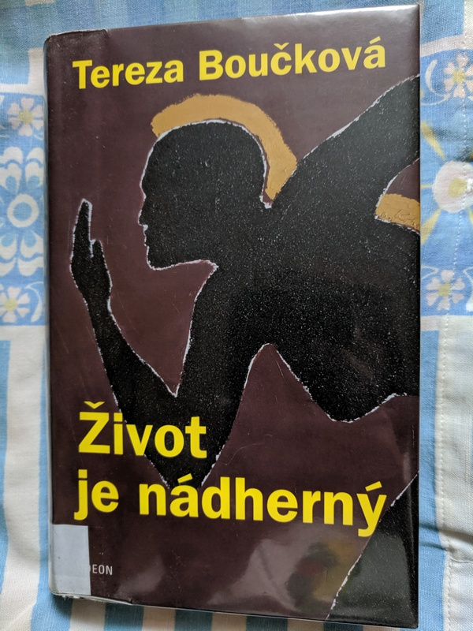
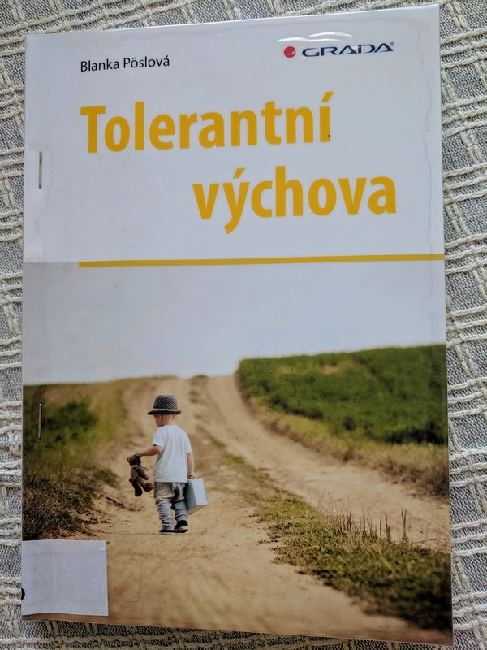
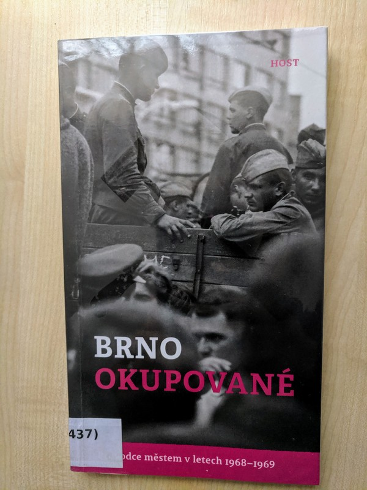
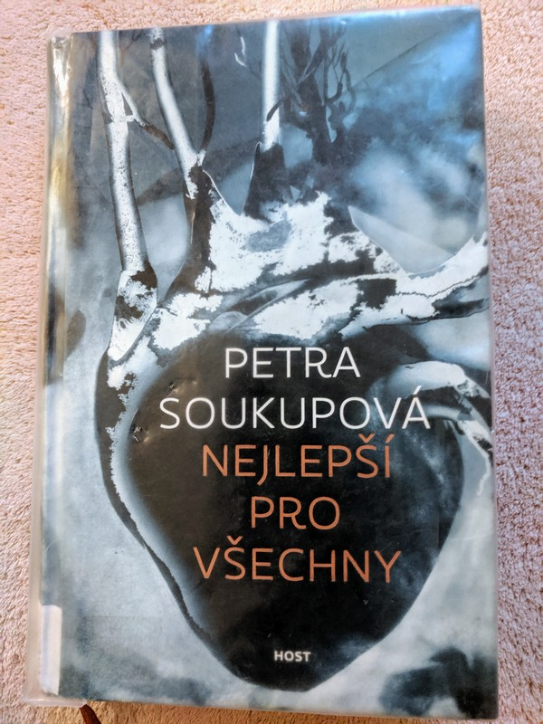
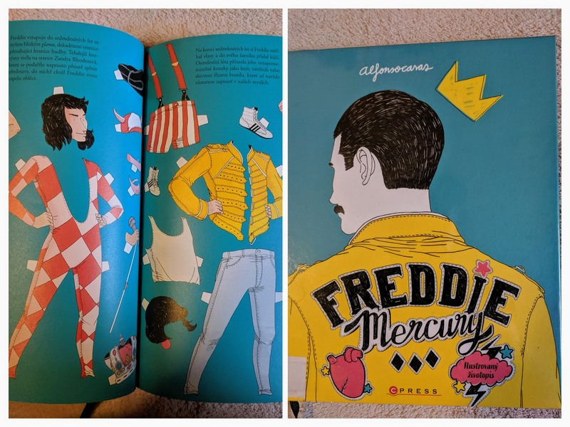
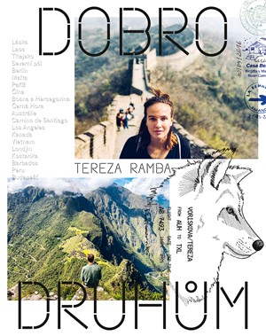
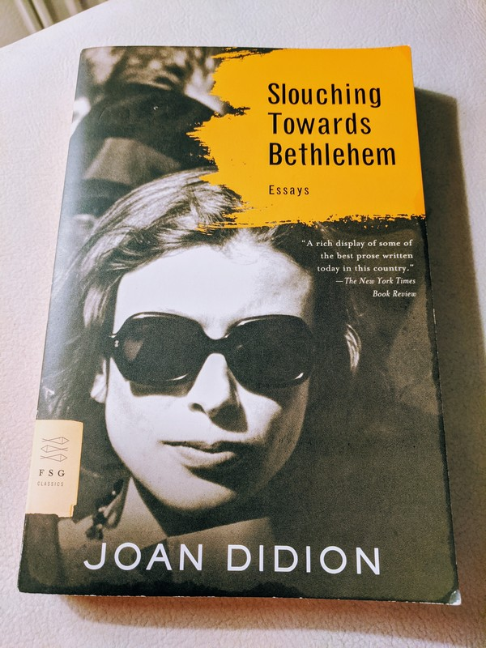
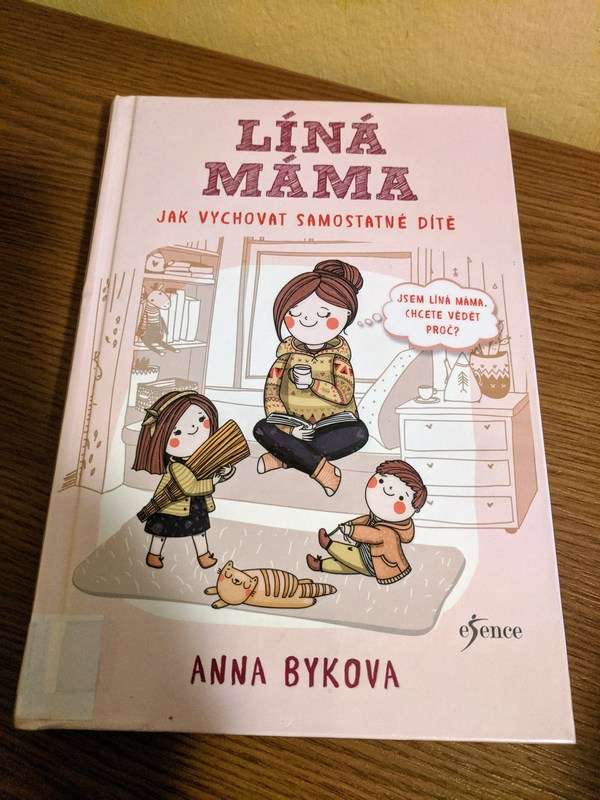
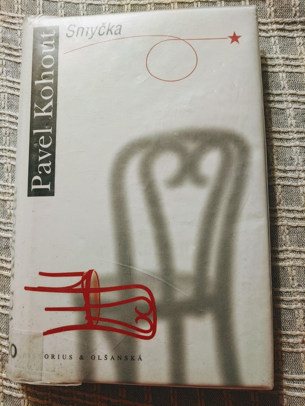
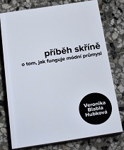

Tento podzim tu mám menší literární smršť :-) To víte, co taky dělat jinýho v karanténě… Naštěstí jsem se stihla předzásobit, ještě než se brány knihoven opět zavřely.
Tereza Boučková - Život je nádherný
Tereza Boučková je za mě jedním z top současných českých autorů a navíc je mi blízká i tak nějak lidsky. Často v jejích knihách nacházím názory, s nimiž se ztotožňuji A co na nich miluju úplně nejvíc - ač se nejedná o úplně jednoduchá životní témata, nikdy z nich na mě nedýchá beznaděj, deprese či rezignace nad životem (byť by si to autorka vzhledem ke svému životnímu příběhu asi i mohla dovolit). Jeden z jejích novějších románu Život je nádherný tak byla sázka na jistotu a zhltla jsem ho skoro na posezení (jak jen čas a O. dovolil :).
Člověk v umění vždycky hledá svoji zkušenost, to, s čím může souznít, čemu rozumí, co ho baví anebo čemu se může stejně vysmát; člověk přece vždycky hledá v knížce svůj příběh, i když je jeho životu fakticky na hony vzdálený.
Děj románu se odehrává v časovém horizontu od Vánoc 2010 do Vánoc 2011 a volně navazuje na autobiografický Rok kohouta i předešlý Indiánský běh. Výraznou linií, kolem které se příběh odvíjí, je onemocnění autorčiny maminky Alzheimerovou chorobou, ale kniha naznačí také vývoj životních příběhů autorčiných adoptivních synů. Pro fanoušky literatury je kniha prodchnuta také celou řadou knižních tipů (hned jsem si rozšířila svůj “to read” list :-), ale také glosami na politické události výše zmiňovaného období, na které už jste možná zapomněli (třeba nechvalně proslulá krádež protokolárního pera tehdejším prezidentem Klausem 8-) Příběh se uzavírá na Vánoce 2011, které zůstanou ve vzpomínkách řady lidí spojené s úmrtím Václava Havla. I proto je zajímavé číst, jak vnímala toto období Tereza Boučková, která ho z dob minulého režimu dobře znala a jeho odchod reflektovala jako pomyslný konec jedné éry.

Blanka Pöslová - Tolerantní výchova
Titul, který mě na první prolistování spíš odradil než zaujal, nicméně když jsem po něm sáhla o něco později v jiném rozpoložení, nakonec jsem ho celkem se zájmem přelouskala. Určitě není přístup, který je v něm popsán, něčím, s čím bych se stoprocentně ztotožňovala a ani tón, kterým autorka, psycholožka a rodinná terapeutka, knihu napsala, mi příliš nesednul. Jednou za čas ale ráda po takové knize sáhnu, abych se víc utvrdila v cestě, po které se jako máma hodlám ubírat.

Michal Konečný, Alexandr Brummer - Brno okupované
Dosud poslední díl z brněnské série, kterou jsem četla těsně před porodem, tentokrát rekapitulující významné události let 1968 a 1969 v kulisách moravské metropole.

Petra Soukupová - Nejlepší pro všechny
Tak opět nemůžu než smeknout před touto českou autorkou. Nevím, jestli už jsem si na její styl psaní zvykla a trochu se obrnila nebo tahle knížka mělo o něco optimističtější vyznění, ale už se mi při jejím čtení nestahoval žaludek depresí jako u těch předchozích. Člověk by řekl, že to není zrovna pozitivní recenze, ale někdy prostě i ty těžké příběhy k životu patří a dokázat je vykreslit tak silně a věrohodně je nemalé umění. Nejlepší pro všechny je opět kniha plná osvědčených autorčiných ingrediencí - složité rodinné vztahy, zátěžové situace, vzájemné nepochopení… Příběh o tom, že jsou chvíle, v nichž neexistuje to jediné správné řešení…

Alfonso Casas - Freddie Mercury: Ilustrovaný životopis
Tak tohle je asi ta nejhezčí knížka o Freddiem, kterou jsem kdy držela v ruce :-) Nádherná a nápaditá po grafické stránce, výstižná po stránce obsahové. Ve Freddieho příběhu, který je zde poměrně stručně vylíčen, z mého pohledu nic zásadního nechybí - zároveň jsem se ale dočetla i několik nových, nebo možná z mé strany už zapomenutých informací (třeba že pro “pobuřující” klip k písničce I want to break free tento song v puritánské Americe totálně propadl :-) Pro všechny fanoušky Queen naprosté must-have, to snad ani nemusím dodávat :-)

Tereza Ramba - Dobrodruhům
Poetický cestopis, který mě okouzlil nejen tím, že se mi dostal do rukou v době, která cestování do dalekých krajů zrovna nepřeje, ale hlavně netradičním zpracováním a svérázným jazykem. Pokud hledáte klasický cestovní deník, budete zklamaní, ale pár užitečných informací určitě mezi řádky vyčtete i tak. Spíš než cestovní deník je to prostě deník jedné životní etapy. Spíš než o životě na cestách je to o tom, že život je cesta. Tato kniha nejspíš nesedne každému, ale já tleskám, mně chytla za srdce.
Když se ztratíš, nikdy se nevracej zpátky. Lepší je jít dál. Řídit se podle moře a hor. Nebo jinejch záchytnejch bodů. Určitě se někde, někdy prostě napojíš.

Joan Didion - Slouching Towards Bethlehem
Další knížka v angličtině pokořena :D Tentokrát tato kniha esejů americké autorky Joan Didion, kterou mi koupil brácha při naší poslední návštěvě New Yorku na jaře 2017. Musím říct, že tohle pro mě byl po jazykové stránce asi dosud největší oříšek. Jednak se v knize celkem často objevují různé “filosofující” pasáže a pak samozřejmě i bohatá slovní zásoba, na kterou jsem moc nestačila. Když jsem měla po ruce slovník, neměla jsem s porozuměním větší problém, ale bez něj jsem se v textu místy celkem ztrácela, takže i to se asi odráží na mém celkovém hodnocení knihy. Sjednocujícím tématem celé této sbírky non-fiction esejů je život v Kalifornii v 60. letech minulého století. Najdete zde jak konkrétní příběhy, tak autorčiny filosofické úvahy a autobiografická vyprávění. Nejvíc mě zaujala asi to nejobsáhlejší, pojmenovaná stejně jako celá kniha Slouching Towards Bethlehem, v němž autorka sdílí svou zkušenost ze setkání s hnutím hippies v San Franciscu a drogovou scénou.

Anna Bykova - Líná máma
A ještě jedna “výchovná” publikace, byť jsem si dřív nemyslela, že něco takového někdy budu číst, ale znáte to 8-)… Každopádně tato knížka je opravdu plná praktických a užitečných tipů pro všechny příliš opečovávající rodiče, kteří si někdy ani neuvědomují, jakou medvědí službu svým dětem prokazují, když za ně řeší či dělají věci, které by ve svém věku už bez problémů zvládly samy. V jistém smyslu to pro mě bylo velké prozření a byť je někdy strašně těžké vystoupit ze zažitých vzorců, které vám třeba i předávali vaši vlastní rodiče, je důležité si uvědomit všechny důsledky… a občas být prostě líná máma a nechat děti, ať se s životem poperou samy (za našeho láskyplného dohledu) 8-)

Pavel Kohout - Smyčka
Je to trochu s podivem, protože z české klasiky už mám načteno ledacos, ale toto bylo moje úplně první setkání s Pavlem Kohoutem. A laťka je vysoko! V centru dění tohoto stručného románu, jak zní v podtitulu, je milostný trojúhelník - mladý, zapálený komunistický básník, sociální demokrat - ikona první republiky a jeho žena, slavná herečka. Mohlo by to být možná tuctové melodrama, ale to by se nesměl psát rok 1948… Pozitivně hodnotím zejména to, jak je vlastně celý příběh uvěřitelný a dokážu si představit, že by se něco takového skutečně mohlo stát, byť kritici vytýkají knize určitou schematičnost. Jistou měrou k tomu přispívá i to, že ústřední postava poety z proletářského Karlína nese autobiografické rysy autora (dočetla jsem se, že některé jeho verše uvedené v textu jsou skutečně dobovou tvorbou Pavla Kohouta, jehož komunistická minulost je obecně známá věc). Ať už si o jeho poněkud kontroverzní osobnosti myslíte cokoliv, Smyčka je strhující příběh, od něhož nebudete chtít odejít, dokud nedospěje ke svému dramatickému konci.

Veronika Blabla Hubková - Příběh skříně
A na samý závěr tu mám ještě jeden e-book, na který jsem narazila celkem náhodou na sociálních sítích, byť o jeho existenci už delší dobu vím. Autorka jej nyní nově dala volně ke stažení, takže jsem neváhala a ještě ten večer se začetla. Pokud vás zajímá pozadí oděvního průmyslu, co se skrývá za všemi těmi certifikacemi materiálů, ale také ekologická stránka vašich nových silonek, rozhodně doporučuji k pročtení. Dnes už se o udržitelném šatníku sice hovoří mnohem víc než kdy dřív a sama už se při nakupování oblečení snažím řetězcům spíš vyhýbat, ale není na škodu si stále připomínat, že se vyplatí přečíst si cedulku na vyhlédnutém tričku a zamyslet se nad materiálem, ze kterého bylo vyrobeno…
